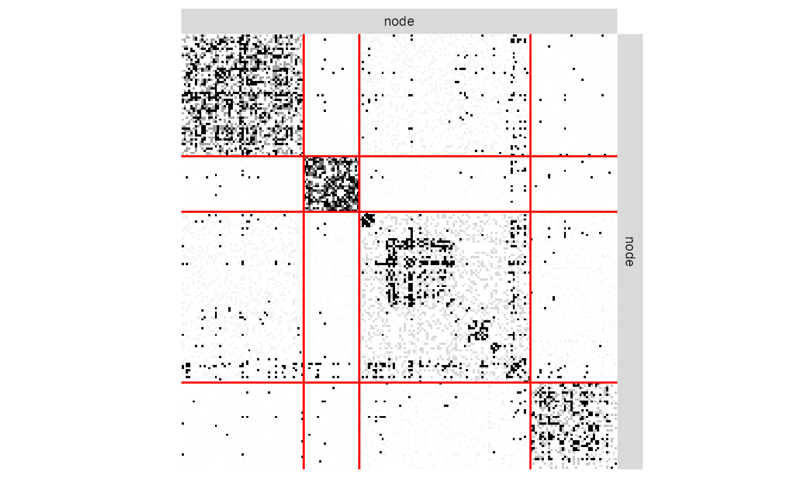

An R6 class to represent an SBM fit with missing data
Source:R/R6Class-missSBM_fit.R
missSBM_fit.RdThe function estimateMissSBM() fits a collection of SBM for varying number of block.
Each fitted SBM is an instance of an R6 object with class missSBM_fit, described here.
Fields are accessed via active binding and cannot be changed by the user.
This class comes with a set of R6 methods, some of them being useful for the user and exported
as S3 methods. See the documentation for show(), print(), fitted(), predict(), plot().
Active bindings
fittedSBMthe fitted SBM with class
SimpleSBM_fit_noCov,SimpleSBM_fit_withCovorSimpleSBM_fit_MNARinheriting from classsbm::SimpleSBM_fitfittedSamplingthe fitted sampling, inheriting from class
networkSamplingand corresponding fitsimputedNetworkThe network data as a matrix with NAs values imputed with the current model
monitoringa list carrying information about the optimization process
occupiedBlocksthe number of classes actually occupied by at least one node; can be less than
fittedSBM$nbBlocksfor an over-specified fit whose VEM has collapsed one or more classes (seerepair())degenerateTRUEifoccupiedBlocks < fittedSBM$nbBlocksentropyImputedthe entropy of the distribution of the imputed dyads
entropythe entropy due to the distribution of the imputed dyads and of the clustering
vExpecdouble: variational expectation of the complete log-likelihood
penaltydouble, value of the penalty term in ICL
loglikdouble: approximation of the log-likelihood (variational lower bound) reached
ICLdouble: value of the integrated classification log-likelihood
Methods
missSBM_fit$new()
constructor for networkSampling
Usage
missSBM_fit$new(partlyObservedNet, netSampling, clusterInit, useCov = TRUE)Arguments
partlyObservedNetAn object with class
partlyObservedNetwork.netSamplingThe sampling design for the modelling of missing data: MAR designs ("dyad", "node") and MNAR designs ("double-standard", "block-dyad", "block-node" ,"degree")
clusterInitInitial clustering: a vector with size
ncol(adjacencyMatrix), providing a user-defined clustering. The number of blocks is deduced from the number of levels in withclusterInit.useCovlogical. If covariates are present in partlyObservedNet, should they be used for the inference or of the network sampling design, or just for the SBM inference? default is TRUE.
missSBM_fit$doVEM()
a method to perform inference of the current missSBM fit with variational EM
Usage
missSBM_fit$doVEM(
control = list(threshold = 0.01, maxIter = 100, fixPointIter = 3, trace = TRUE)
)Arguments
controla list of VEM control parameters (see
estimateMissSBM())
missSBM_fit$split()
clone of the current fit after splitting cluster index in two, via a
spectral bipartition of the sub-network it induces. Builds but does not fit the
candidate (see candidates_split()).
Arguments
indexindex (integer) of the cluster to split
in_placereplace
self's own fit (TRUE) or return a new object (FALSE, the default)?base_netoptional precomputed network to bipartition (as built internally at the top of this method); lets
candidates_split()avoid recomputing it once per candidate.
missSBM_fit$candidates_split()
generate and cheaply trial-fit candidates obtained by splitting each
splittable cluster in two (see split()). A cluster is splittable if it has at
least 4 members and non-zero variance in its induced sub-network.
Usage
missSBM_fit$candidates_split(
control = list(threshold = 0.01, maxIter = 100, fixPointIter = 3, trace = TRUE),
trial_niter = 2
)Arguments
controla list of VEM control parameters (see
estimateMissSBM());maxIteris overridden bytrial_nitertrial_niternumber of VEM iterations used for the trial fits. Default is 2.
missSBM_fit$merge()
clone of the current fit after merging clusters indices[1] and
indices[2] into one. Builds but does not fit the candidate (see
candidates_merge()).
missSBM_fit$candidates_merge()
generate and cheaply trial-fit candidates obtained by merging pairs of
clusters (see merge()). Beyond max_candidates pairs (quadratic in the
number of blocks), only the most similar-connectivity pairs are tried.
Usage
missSBM_fit$candidates_merge(
control = list(threshold = 0.01, maxIter = 100, fixPointIter = 3, trace = TRUE),
max_candidates = 30,
trial_niter = 2
)Arguments
controla list of VEM control parameters (see
estimateMissSBM());maxIteris overridden bytrial_nitermax_candidatescap on the number of pairs tried. Default is 30.
trial_niternumber of VEM iterations used for the trial fits. Default is 2.
missSBM_fit$repair()
recovers a degenerate fit (fewer occupied classes than its structural
nbBlocks, e.g. after a VEM component collapse) by filling the empty classes (see
repair_empty_classes()) and refitting the full VEM. Mutates self in place;
a no-op if the fit is not degenerate.
Usage
missSBM_fit$repair(
control = list(threshold = 0.01, maxIter = 100, fixPointIter = 3, trace = TRUE)
)Arguments
controla list of VEM control parameters (see
estimateMissSBM())
missSBM_fit$polish()
discrete node-swap polishing (Kernighan-Lin / greedy-ICL style): after VEM
convergence, tau is near-hard and its fixed point cannot relocate a single
misclassified node (only split()/merge() fix group-level mistakes). Each
sweep computes, for every node, the closed-form complete-data log-likelihood gain of
moving it to its best alternative class (theta/pi held fixed), applies the improving,
non-class-emptying moves, then runs a full VEM to resettle. Stops as soon as a sweep
fails to improve the ICL, mutates self in place, and never leaves the ICL worse
than before the call.
Usage
missSBM_fit$polish(
control = list(threshold = 0.01, maxIter = 100, fixPointIter = 3, trace = TRUE),
max_sweeps = 10
)Arguments
controla list of VEM control parameters (see
estimateMissSBM())max_sweepsmaximum number of swap sweeps. Default is 10.
Examples
## Sample 75% of dyads in French political Blogosphere's network data
adjMatrix <- missSBM::frenchblog2007 %>%
igraph::as_adjacency_matrix(sparse = FALSE) %>%
missSBM::observeNetwork(sampling = "dyad", parameters = 0.75)
collection <- estimateMissSBM(adjMatrix, 3:5, sampling = "dyad")
#>
#>
#> Adjusting Variational EM for Stochastic Block Model
#>
#> Imputation assumes a 'dyad' network-sampling process
#>
#> Initialization of 3 model(s).
#> Performing VEM inference
#> Model with 3 blocks.
Model with 5 blocks.
Model with 4 blocks.
Polishing (node-swap)
#>
#> Looking for better solutions
#> Pass 1 Going forward ++
Pass 1 Going backward ++
my_missSBM_fit <- collection$bestModel
class(my_missSBM_fit)
#> [1] "missSBM_fit" "R6"
plot(my_missSBM_fit, "imputed")
